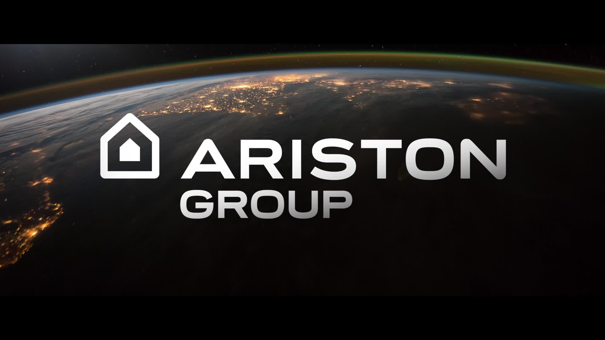
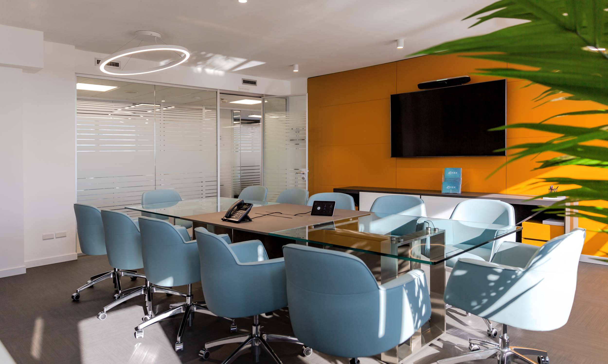

Percorso PCTO
Esperienza presso Ariston Group
Primo periodo
Durante il primo periodo del mio percorso PCTO ho avuto l'opportunità di svolgere la mia esperienza presso Ariston Group, un'importante realtà industriale operante nel settore della termotecnica. Ariston è specializzata nella progettazione e produzione di sistemi per il riscaldamento e la produzione di acqua calda sanitaria, tra cui caldaie, scaldacqua e pompe di calore, ed è riconosciuta a livello internazionale per l'attenzione alla qualità, all'innovazione e alla sostenibilità ambientale.
Nei primi giorni sono stato accompagnato in una visita della struttura aziendale, dove ho potuto osservare l'organizzazione interna e conoscere i principali reparti. Fin da subito è emerso quanto l'ambiente fosse ben organizzato, competente e tecnologicamente all'avanguardia, caratteristiche che hanno suscitato in me un notevole interesse.
Successivamente, sono stato inserito nell'ufficio tecnico/informatico, dove ho avuto modo di ambientarmi, prendere confidenza con gli strumenti utilizzati dall'azienda e comprendere le dinamiche operative. Dopo una fase iniziale di osservazione, mi è stato assegnato un primo progetto individuale: la realizzazione di un modulo software in Python con funzionalità di parser, ovvero un programma in grado di analizzare file di testo di grandi dimensioni, contenenti dati tecnici, e estrarre automaticamente le informazioni rilevanti per l'ottimizzazione dei prodotti dell'azienda.
Il progetto ha richiesto un'accurata analisi preliminare dei dati, seguita da una fase di studio e sviluppo dell'algoritmo di parsing, con particolare attenzione all'efficienza e all'affidabilità del codice. In questa fase ho lavorato in autonomia, confrontandomi con problemi reali e imparando a utilizzare logiche di programmazione orientate all'uso professionale.
Secondo periodo
Nel secondo periodo, il progetto è stato esteso e migliorato: ho implementato una funzionalità aggiuntiva che permetteva, una volta completata l'analisi del file, di generare automaticamente un report in formato Excel. Questo report organizzava in una griglia strutturata i dati ritenuti significativi per l'azienda, rendendoli facilmente consultabili e utili per l'attività degli ingegneri.
Durante questa fase ho avuto modo di approfondire l'interazione tra Python e il formato Excel, imparando a esportare i dati in maniera chiara, ordinata e personalizzabile, nel rispetto delle esigenze aziendali. Ho inoltre curato aspetti legati alla presentazione del risultato, come la formattazione dei fogli e la disposizione dei dati, per facilitare la lettura da parte dei tecnici interni.
Verso la fine del secondo periodo ho partecipato a una presentazione pubblica nella sala comune dell'azienda, durante la quale ho illustrato il mio progetto ai responsabili di reparto. In questa occasione ho descritto sia i punti di forza del software (ad esempio la sua velocità, la precisione nell'estrazione dei dati e la facilità d'uso), sia i punti critici riscontrati durante lo sviluppo (in particolare, la difficoltà nella gestione di file non omogenei o la mancanza di un'interfaccia grafica). Questo momento è stato particolarmente formativo, in quanto mi ha permesso di sintetizzare e comunicare in modo efficace il lavoro svolto, esponendo le scelte tecniche adottate e rispondendo alle domande dei presenti.
Conclusioni
Nel complesso, questa esperienza di alternanza scuola-lavoro è stata molto significativa dal punto di vista formativo. Mi ha permesso di confrontarmi con un contesto lavorativo reale, di mettermi alla prova nello sviluppo di un progetto concreto, e di applicare competenze informatiche acquisite durante il percorso scolastico.
Tuttavia, non sono mancati momenti di difficoltà e incertezza. In più occasioni mi sono trovato da solo ad affrontare problemi tecnici, senza il supporto costante di un team, condizione che ha rallentato il mio lavoro e creato situazioni di insicurezza. Avrei desiderato far parte di un gruppo di sviluppo collaborativo, per poter condividere idee, confrontarmi con figure più esperte e crescere anche a livello relazionale.
Nonostante ciò, ritengo che l'esperienza sia stata molto utile, perché mi ha aiutato a capire quali sono i miei punti di forza e quali le mie preferenze in ambito lavorativo. In particolare, ho compreso che il lavoro da programmatore in un ambiente statico o da scrivania non è ciò che sento più affine alla mia personalità. Preferisco contesti dinamici, con maggiore interazione tra colleghi, in cui sia possibile un confronto continuo. Questa consapevolezza rappresenta per me un passaggio fondamentale nel mio orientamento professionale futuro.